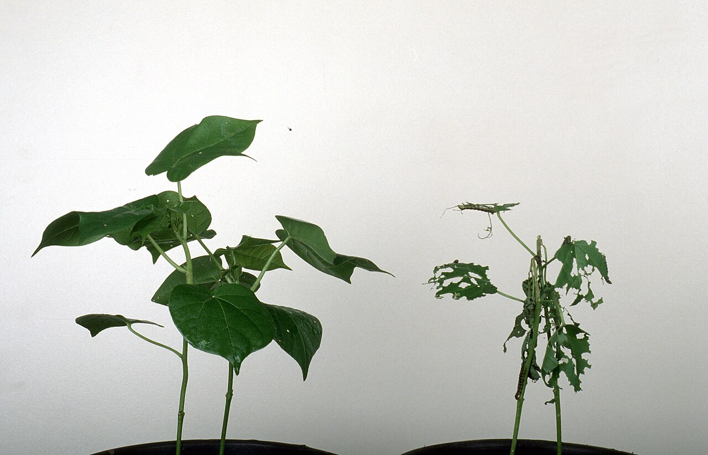

转基因产品的安全性
本期导读
食物安全 · 生物安全 · 环境安全

视频原话 · 导读3 句
- 同学们好！这节课梳理人教版选择性必修三第四章第一节——转基因产品的安全性。8.2s
- 高考常考转基因安全性争论的三个方面、防止基因污染的措施，以及辩证分析类的论述题。8.4s
- 我们按五个考点梳理，每个考点都讲清楚怎么考、怎么做。5.4s
转基因成果与利弊01#
农业
抗虫棉、抗除草剂作物
提高产量、减少农药使用
提高产量、减少农药使用
医药
胰岛素、干扰素等
缓解药物短缺、降低成本
缓解药物短缺、降低成本
担忧
会不会危害人体健康？会不会破坏生态环境？
解题方法
利和弊都要写，不能只答一面
视频原话4 句
- 考点一，转基因成果与利弊。在农业上，转基因抗虫棉、抗除草剂作物等，提高了产量、减少了农药的使用。10.8s
- 在医药上，基因工程药物如胰岛素、干扰素，缓解了药物短缺，降低了成本。7.6s
- 但人们也担心：转基因产品是否会危害人体健康，是否会破坏生态环境。7.2s
- 考法：判断转基因技术的意义和风险。解题方法：利和弊都要写，不能只答一面。8.4s
安全性的争论02#
食物安全
会不会产生新的过敏原或毒性蛋白？营养成分会不会改变？
生物安全
外源基因会不会通过花粉扩散到近缘物种？会不会成为“入侵物种”？
环境安全
会不会打破生态平衡？抗除草剂基因转入杂草 → “超级杂草”
减少基因污染：目的基因导入叶绿体 DNA —— 花粉中一般不含叶绿体，不会随花粉扩散
解题方法
看影响对象：人 → 食物安全；其他生物 → 生物安全；生态系统 → 环境安全
视频原话5 句
- 考点二，对转基因产品安全性的争论，主要集中在三个方面。食物安全：会不会产生新的过敏原或毒性蛋白，营养成分会不会改变。12.9s
- 生物安全：外源基因会不会通过花粉扩散到近缘物种，转基因生物会不会成为“入侵物种”，影响生物多样性。10.3s
- 环境安全：会不会打破生态平衡，比如抗除草剂基因转移到杂草，产生难以清除的“超级杂草”。9.2s
- 减少基因污染的一个方法：把目的基因导入叶绿体DNA中，因为花粉中一般不含叶绿体，目的基因不会随花粉扩散。10.8s
- 考法：给出一种担忧，判断属于哪类安全。解题方法：看影响对象——人是食物安全，其他生物是生物安全，生态系统是环境安全。13.1s
我国的管理03#
法规：《农业转基因生物安全管理条例》等；实行安全评价制度
农业转基因生物实行标识制度，保障消费者的知情权和选择权
研究上
要大胆
推广上
要慎重
管理上
要严格
易错
标识制度是为了保障知情权和选择权，并不代表这种产品不安全
视频原话4 句
- 考点三，我国对转基因产品的管理。我国制定了《农业转基因生物安全管理条例》等法规，实行安全评价制度。10.4s
- 对农业转基因生物实行标识制度，保障消费者的知情权和选择权。6.7s
- 对转基因技术，我国的方针是：研究上要大胆，推广上要慎重，管理上要严格。7.8s
- 易错：标识制度是为了保障知情权和选择权，不代表这种产品不安全。7.1s
理性看待转基因04#
① 靠证据
靠确凿的证据和严谨的逻辑思考和辩论
② 看背景
观点受社会、文化、经济等因素影响
③ 不盲从
不盲目肯定或否定；依法监管，趋利避害
易错
“一定有害”和“绝对安全”都是绝对化的说法，判断题中出现一般都是错的
视频原话4 句
- 考点四，理性看待转基因技术。首先，要靠确凿的证据和严谨的逻辑进行思考和辩论。9.1s
- 其次，要看到人们的观点受到社会、文化、经济等多种因素的影响。6.7s
- 最后，既不盲目肯定，也不盲目否定，在依法监管的前提下，趋利避害。7.0s
- 易错：“转基因食品一定有害”和“转基因食品绝对安全”都是绝对化的说法，判断题里出现，一般都是错的。9.9s
辩证分析答题法05#
① 态度
如“支持在严格监管下推广”
② 好处
提高产量、减少农药使用、改善品质
③ 风险
从食物安全、生物安全、环境安全中选一两点
④ 措施
安全评价、标识管理、设置隔离带、目的基因导入叶绿体
解题方法
论述题四步走：态度 → 好处 → 风险 → 措施，有理有据，不跑偏
视频原话5 句
- 考点五，答题方法：辩证分析，有理有据。第一步，表明态度，比如“支持在严格监管下推广”。9.7s
- 第二步，说明好处：比如提高产量、减少农药使用、改善品质。6.5s
- 第三步，指出可能的风险：从食物安全、生物安全、环境安全三个方面选一两点。8.2s
- 第四步，提出措施：安全评价、标识管理、设置隔离带、把目的基因导入叶绿体等。8.4s
- 解题方法：记住四步——态度、好处、风险、措施，论述题就不会跑偏。7.7s
易错速查✓
先自己判断，再点按钮查看对错与解析。
- 1转基因作物都对人体有害说法错误：要靠科学证据，不能一概而论
- 2转基因植物的外源基因可能通过花粉扩散说法正确。
- 3将目的基因导入叶绿体可减少基因污染说法正确。
- 4我国对农业转基因生物实行标识制度说法正确。
- 5转基因技术安全争论早已有了定论，无需评价说法错误：需要个案评价、依法监管
- 6面对转基因，应全盘接受或全盘否定说法错误：应理性看待，趋利避害
靠证据说话，趋利又避害！
视频原话 · 易错速查5 句
- 最后，用六道判断题检验一下。3.6s
- 判断一：转基因作物都对人体有害？错，要靠科学证据。判断二：外源基因可能通过花粉扩散？对。11.3s
- 判断三：把目的基因导入叶绿体可减少基因污染？对。判断四：我国对农业转基因生物实行标识制度？对。12.0s
- 判断五：转基因安全争论已有定论，无需评价？错。判断六：面对转基因应全盘接受或全盘否定？错，要理性看待。13.1s
- 五个考点串成一条线：靠证据说话，趋利又避害。我们下期再见！6.7s
图片来源
图片来源：Wikimedia Commons —— Plant Industry, CSIRO《CSIRO ScienceImage 381 Genetically Modified Cotton vs Normal Cotton》CC BY 3.0
Photo: Plant Industry, CSIRO, CC BY 3.0